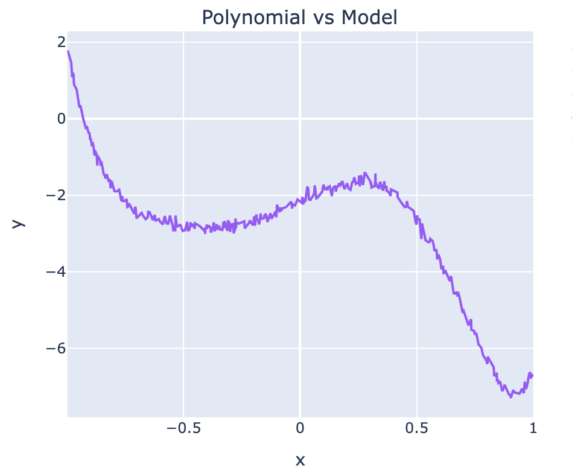
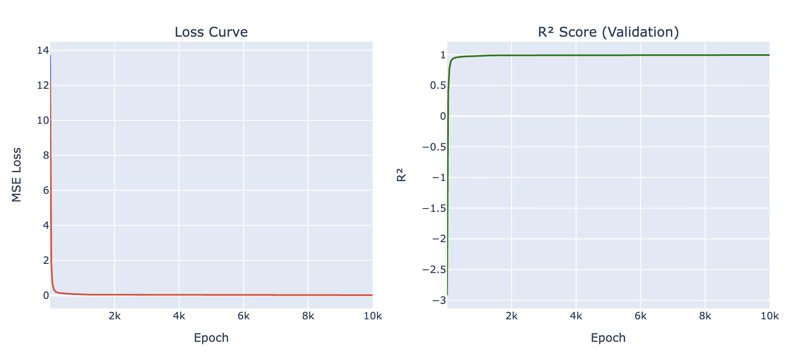
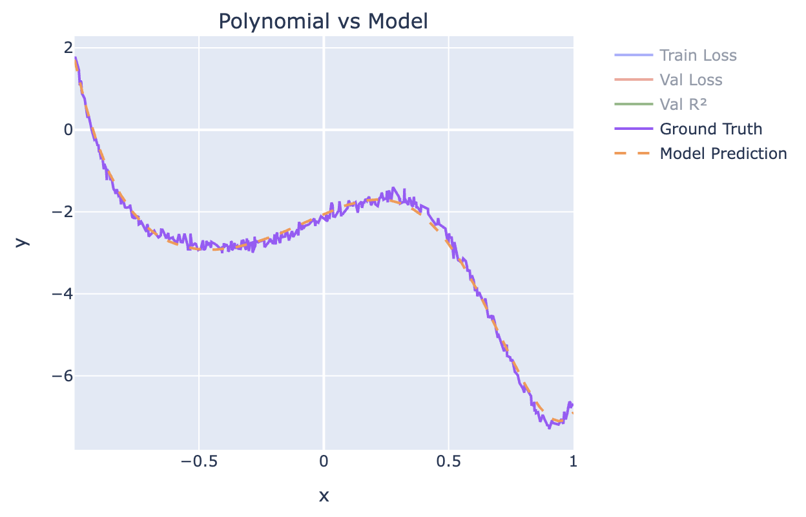

Linear Regression
Armed with the knowledge of Maximum Likelihood Estimation (MLE), we can now explore the concept of Linear Regression. Linear Regression is a fundamental statistical method used to model the relationship between a dependent variable and one or more independent variables. It assumes that this relationship can be approximated by a linear equation.
Hypothesis Formulation:
Like before, we will start with a dataset that we have sampled from a population. The dataset consists of pairs of observations $(x_i, y_i)$, where $x_i \in \mathbb{R}^n$ represents the independent variable (or feature) and $y_i \in \mathbb{R}$ represents the dependent variable (or target). The goal of linear regression is to find the best-fitting curve that minimizes the difference between the predicted values and the actual observed values. We will call the predicted values $\hat{y_i}$, which are obtained from the linear regression model.
If we assume that there exists a linear relationship between the independent variable $x$ and the dependent variable $y$, we can express this relationship mathematically as: \begin{align*} y = h_\theta(x) + \epsilon\\ \implies \epsilon = y - h_\theta(x) \end{align*}
where, \begin{align*} h_\theta(x) &= \hat{y} = \theta_0 + \theta_1 x_1 + \theta_2 x_2 + \ldots + \theta_n x_n \end{align*}
- $\theta_0$ is the intercept term,
- $\theta_1, \theta_2, \ldots, \theta_n$ are the coefficients (weights) associated with each independent variable. For notational convenience, we can absorb the bias into the parameter vector $\theta$ by augmenting $x_i$ with a constant feature $x_{i,0} = 1$, so that $h_\theta(x_i) = \theta^T x_i$.
and $\epsilon \sim \mathcal{N}(0, \sigma^2)$ is the error term that accounts for the variability in $y$. The error term $\epsilon$ is the random noise sampled from a normal distribution with zero mean and constant variance $\sigma^2$. This also means that $y - h_\theta(x) \sim \mathcal{N}(0, \sigma^2)$, which implies that the difference between the actual observed value $y$ and the predicted value $\hat{y}$ is normally distributed with zero mean and constant variance $\sigma^2$.
I'll explain in detail what normal distribution means in future posts
In other words, we can express the probability density function (PDF) of the error term $\epsilon$ as: \begin{align*} p(\epsilon) &= \frac{1}{\sqrt{2\pi\sigma^2}} \exp\left(-\frac{\epsilon^2}{2\sigma^2}\right)\\ &= \frac{1}{\sqrt{2\pi\sigma^2}} \exp\left(-\frac{(y - h_\theta(x))^2}{2\sigma^2}\right)\\ &= p(y \mid x;\theta) \end{align*}
i.e. the probability of observing $y$ given $x$ and the parameters $\theta$ is normally distributed with mean $h_\theta(x)$ and variance $\sigma^2$. This is the likelihood function that we will use to estimate the parameters $\theta$ using MLE.
Applying Maximum Likelihood Estimation (MLE) to compute loss function:
Now, recall that in the previous post, we discussed how MLE can be used to estimate the parameters of a model by maximizing the likelihood function. Which means we need to maximize $p(y_i \mid x_i;\theta)$ to derive the loss function for linear regression. The log-likelihood function for a single observation $(x_i, y_i)$ can be expressed as:
\begin{align*} \log p(y_i \mid x_i;\theta) &= \log \left( \frac{1}{\sqrt{2\pi\sigma^2}} \exp\left(-\frac{(y_i - h_\theta(x_i))^2}{2\sigma^2}\right) \right) \\ &= -\frac{1}{2} \log(2\pi\sigma^2) - \frac{(y_i - h_\theta(x_i))^2}{2\sigma^2} \end{align*}
For the entire dataset, the log-likelihood function can be expressed as: \begin{align*} \log p(y_1, y_2, ..., y_N \mid x_1, x_2, ..., x_N;\theta) &= \sum_{i=1}^{N} \log p(y_i \mid x_i;\theta) \\ &= -\frac{N}{2} \log(2\pi\sigma^2) - \frac{1}{2\sigma^2} \sum_{i=1}^{N} (y_i - h_\theta(x_i))^2 \end{align*}
Taking $\arg\max$ with respect to $\theta$, we get: \begin{align*} \hat{\theta} &= \arg \max_\theta \log p(y_1, y_2, ..., y_N \mid x_1, x_2, ..., x_N;\theta) \\ &= \arg \max_\theta \left( \underbrace{-\frac{N}{2} \log(2\pi\sigma^2)}_{constant} - \underbrace{\frac{1}{2\sigma^2} \sum_{i=1}^{N} (y_i - h_\theta(x_i))^2}_{dependent\ on\ \theta} \right) \\ &= \arg \min_\theta \sum_{i=1}^{N} (y_i - h_\theta(x_i))^2 \qquad \text{(drop constants $\frac{N}{2}\log(2\pi\sigma^2)$ and $\frac{1}{2\sigma^2}$)} \\ &= \arg \min_\theta \frac{1}{N} \sum_{i=1}^{N} (y_i - h_\theta(x_i))^2 \qquad \text{(dividing by $N > 0$ does not change $\arg\min$)}\\ &= \text{arg min}_\theta \, \text{MSE}(\theta) \end{align*}
So maximizing the log-likelihood function is equivalent to minimizing the mean squared error (MSE) loss function, which is a common loss function used in linear regression!
Unlike most resources that introduce the MSE loss function as a heuristic, we have derived it from first principles using MLE. This shows that the MSE loss function is not just a convenient choice, but rather a principled one that arises naturally from the assumptions of linear regression and the use of MLE.
This is just one example of how MLE can be used to derive loss functions for different types of models in machine learning.
Closed Form Solution:
We can also find the closed-form solution for the optimal parameters $\hat{\theta}$ using linear algebra and multivariate calculus.
Notice that the MSE loss function can be expressed in matrix form as: \begin{align*} \sum_{i=1}^{N} (y_i - h_\theta(x_i))^2 &= (y - \theta^T X)^T (y - \theta^T X)\\ &= y^T y - 2 \theta^T X^T y + \theta^T X^T X \theta \end{align*}
Now, to find the optimal parameters $\hat{\theta}$ that minimize the MSE loss function, we can take the gradient of the MSE loss function with respect to $\theta$ and set it to zero. This will give us the normal equations, which can be solved to obtain the closed-form solution for $\hat{\theta}$.
\begin{align*} \nabla_\theta \text{MSE}(\theta) &= -2 X^T y + 2 X^T X \theta = 0\\ X^T X \theta &= X^T y\\ \hat{\theta} &= (X^T X)^{-1} X^T y \end{align*}
Working Example:
Here I generate synthetic dataset for a 7th degree polynomial and fit a linear regression model to it using the iterative gradient descent method. The dataset consists of 1000 samples with 7 features, and the target variable is generated using a linear function with some added noise. I am using seed 42 to ensure reproducibility of the results. The coefficients of the linear function are randomly generated from a normal distribution with mean 0 and standard deviation 10.
import torch as t
from torch.utils.data import Dataset
class PolynomialDataset(Dataset):
def __init__(self, degree: int, data_size=1000, coefs=[]) -> None:
super().__init__()
if len(coefs) == 0:
coefs = t.randn(degree) * 10
self.eps = t.randn(2*data_size+1) * 0.1
self.coefs = t.tensor(coefs, dtype=t.float32)
self.x = t.linspace(-1, 1, steps=2*data_size+1)
self.x = t.stack([self.x**idx for idx in range(self.coefs.size(0))], dim=1)
def __len__(self):
return len(self.x)
def __getitem__(self, index):
return self.x[index], self.x[index] @ self.coefs + self.eps[index]
And here's how the dataset looks like when plotted:

Next, we build a linear regression model and initialize its parameters $\theta$ randomly using Kaiming Uniform initialisation.
from torch import nn
from torch.nn import Linear
class LinearRegression(nn.Module):
def __init__(self, in_feats, out_feats) -> None:
super().__init__()
self.linear = Linear(in_feats, out_feats, bias=False)
def forward(self, x):
return self.linear(x)
As can be seen from the code above, we are not using bias term in the linear regression model. More on that later.
Now, let us train the model using the MSE loss function and the Adam optimizer.
from typing import Tuple
import torch as t
from torch.types import Number
from tqdm import tqdm
from torch.nn import Module
from torch.optim import AdamW
from torch.utils.data import DataLoader, Dataset
import plotly.graph_objects as go
from plotly.subplots import make_subplots
"""Class to train the linear regression model using the training dataset and evaluate it on the validation dataset.
"""
class Trainer:
def __init__(
self,
model: Module,
train_dataset: Dataset,
val_dataset: Dataset,
epochs=100,
lr=1e-5,
eps=1e-7,
) -> None:
self.model = model
self.train_dataset = train_dataset
self.val_dataset = val_dataset
self.epochs = epochs
self.optim = AdamW(params=model.parameters(), lr=lr, eps=eps)
def mse_loss(self, target: t.Tensor, predicted: t.Tensor) -> t.Tensor:
return t.pow(target - predicted, 2).mean()
def r2_score(self, target: t.Tensor, predicted: t.Tensor) -> Number:
ss_res = t.pow(target - predicted, 2).sum()
ss_tot = t.pow(target - target.mean(), 2).sum()
return (1 - ss_res / ss_tot).item()
def train(self) -> Tuple[Module, go.Figure]:
"""Method to train the model using the training dataset and evaluate it on the validation dataset.
"""
# Create data loaders for training and validation datasets
# We use a batch size of 32 and shuffle the training data to ensure that the model sees different samples in each epoch.
train_data = DataLoader(self.train_dataset, batch_size=32, shuffle=True)
val_data = DataLoader(self.val_dataset, batch_size=32, shuffle=False)
train_losses, val_losses, val_r2_scores = [], [], []
for epoch in tqdm(range(self.epochs), desc="Epochs"):
self.model.train() # Set the model to training mode
batch_losses = []
for X_train, y_train in train_data:
# Forward pass: compute predicted y by passing x to the model
predicted = self.model(X_train).squeeze()
# Compute loss - MSE loss function derived from MLE
loss = self.mse_loss(y_train, predicted)
# Backward pass: compute gradient of the loss with respect to model parameters
self.optim.zero_grad() # Clear the gradients of all optimized tensors
loss.backward() # Backpropagate the loss
self.optim.step() # Update the model parameters using the optimizer
batch_losses.append(loss.item()) # Append the loss for this batch to the list of batch losses
train_losses.append(sum(batch_losses) / len(batch_losses))
self.model.eval() # Set the model to evaluation mode
with t.no_grad():
all_preds, all_targets = [], []
for X_val, y_val in val_data:
preds = self.model(X_val).squeeze()
all_preds.append(preds)
all_targets.append(y_val)
all_preds = t.cat(all_preds)
all_targets = t.cat(all_targets)
val_losses.append(self.mse_loss(all_targets, all_preds).item())
val_r2_scores.append(self.r2_score(all_targets, all_preds))
if (epoch+1) % 100 == 0:
print(f"Epoch {epoch+1}/{self.epochs} | train_loss: {train_losses[-1]:.4f} | val_loss: {val_losses[-1]:.4f} | val_R²: {val_r2_scores[-1]:.4f}")
return self.model, self.plot_loss_curves(train_losses, val_losses, val_r2_scores, self.val_dataset)
I omitted the code for plotting the loss curves for brevity. But you get the idea. MSE loss and $R^2$ score are the metrics that we will use to evaluate the performance of the model on the validation dataset. The $R^2$ score is a statistical measure that represents the proportion of the variance for a dependent variable that's explained by an independent variable or variables in a regression model. It provides an indication of goodness of fit and therefore a measure of how well unseen samples are likely to be predicted by the model, through the proportion of explained variance.
Click to expand for the formula
It is expressed as: \begin{align*} R^2 = 1 - \frac{SS_{res}}{SS_{tot}} \end{align*} which is the ratio of the residual sum of squares ($SS_{res} = \sum_i (y_i - \hat{y}_i)^2$) to the total sum of squares ($SS_{tot} = \sum_i (y_i - \bar{y})^2$). The $R^2$ score ranges from 0 to 1, where a score of 1 indicates that the model explains all the variability of the response data around its mean, while a score of 0 indicates that the model does not explain any of the variability of the response data around its mean.Notice the importance of loss function in the backward pass step. The loss function is used to compute the gradients of the model parameters with respect to the loss, which are then used to update the model parameters using the optimizer. The choice of loss function can have a significant impact on the performance of the model, as it determines how well the model is able to fit the training data and generalize to unseen data and that is why we derived the MSE loss function from first principles using MLE, as it is a principled choice that arises naturally from the assumptions of linear regression and the use of MLE.
Next, wiring everything together, we can train the linear regression model on the synthetic dataset and evaluate its performance on the validation dataset. We will use a learning rate of 1e-3 and train the model for 10000 epochs.
model = LinearRegression(in_feats=in_feats, out_feats=1)
dataset = PolynomialDataset(degree=in_feats)
train_size = int(0.8 * len(dataset)) # train to test split of 80/20
test_size = len(dataset) - train_size
train_ds, val_ds = random_split(dataset, [train_size, test_size])
trainer = Trainer(model, train_ds, val_ds, epochs=10000, lr=1e-3)
model, loss_curves_plot = trainer.train()
loss_curves_plot.show()
Results:
This yields the following loss curves for the training and validation datasets:


As can be seen from the loss curves, the model is able to fit the training data well and generalize to the validation data, as evidenced by the low MSE loss and high $R^2$ score on the validation dataset. The model is able to capture the underlying linear relationship between the independent and dependent variables while ignoring the noise in the data, as evidenced by the low MSE loss and high $R^2$ score on the validation dataset.
Conclusion:
And there you have it! We have successfully derived the MSE loss function for linear regression using MLE and trained a linear regression model on a synthetic dataset. In the next post, we will explore how to extend this approach to logistic regression, which is used for binary classification problems. Stay tuned for more insights into the fascinating world of machine learning!